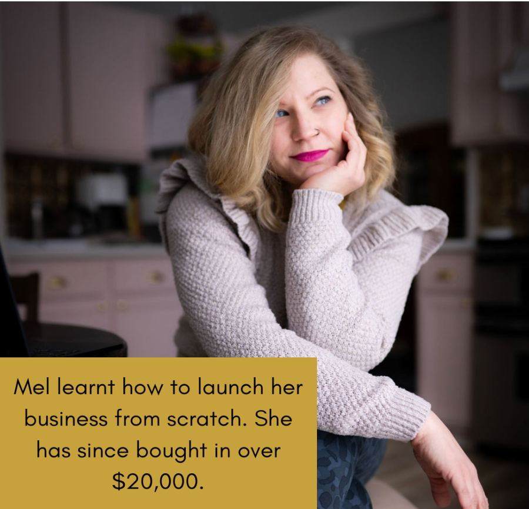
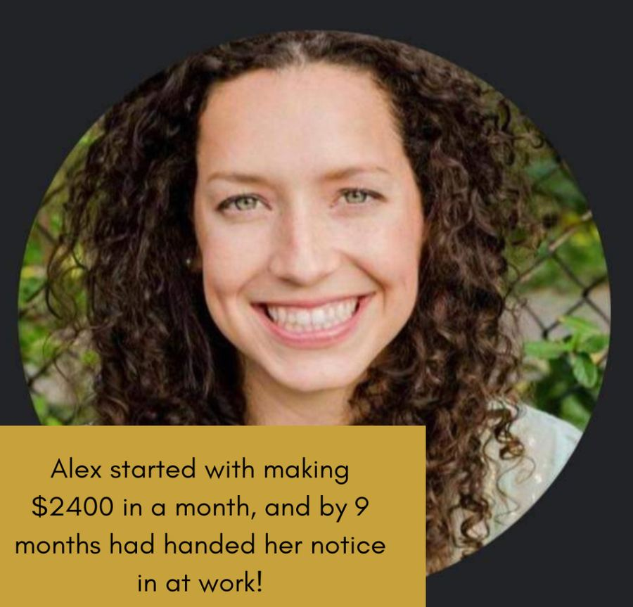
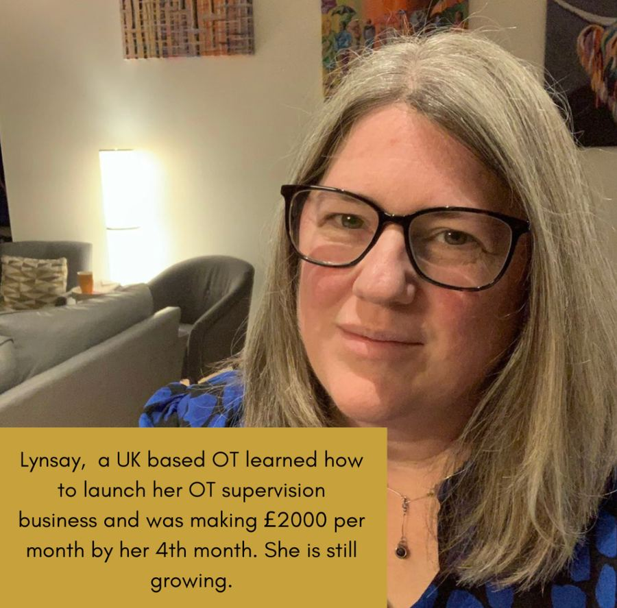
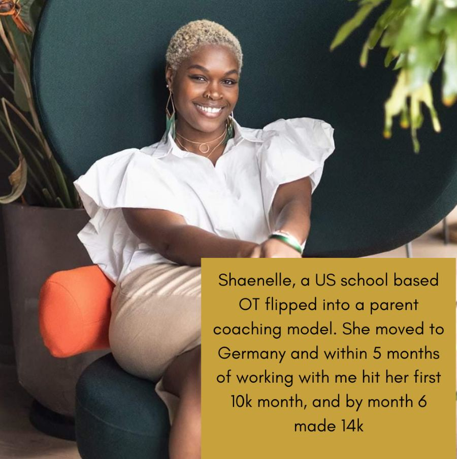
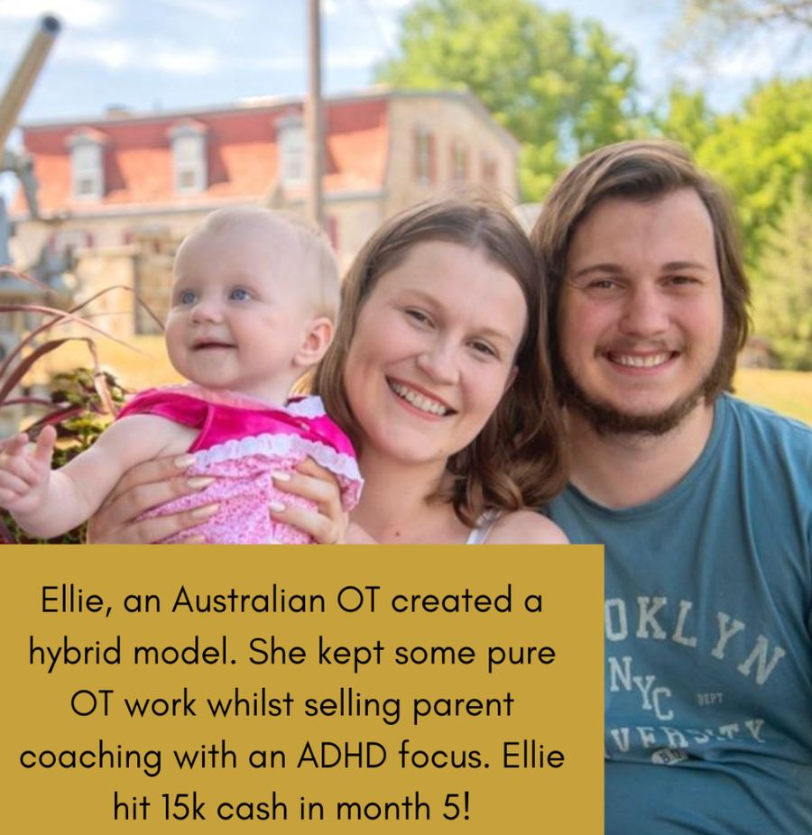
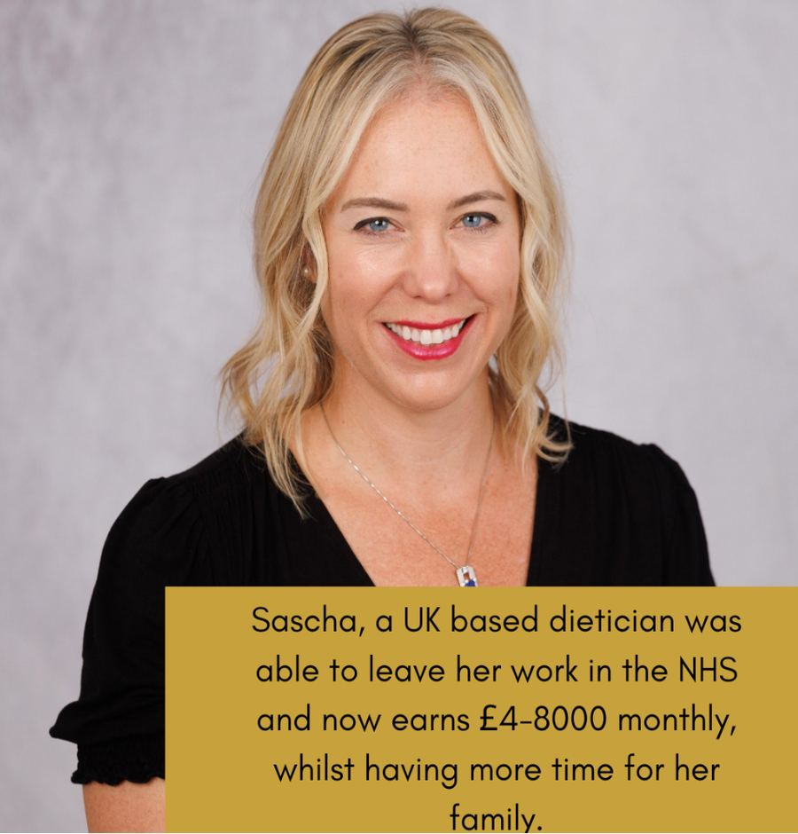

The OT Freedom Collective
For the OT who knows she is operating below her own ceiling. More income. Fewer hours. No second-guessing.
The model is the problem.
Here is the part most people will not say out loud.
You left employment to get your freedom back. What you actually built was a job with better branding. The referrals come in, so you say yes to work you would never have chosen. You write reports in the evenings to justify work you have already done. You are busy, you are good at this, and you are still not in control of a single hour.
That is not freedom. That is the same trap, rebuilt by your own hands.
And it is not happening because you do not know what to do. You know plenty. It is happening because you are still inside a model that was never going to give your time back.
The model is the problem. So we change the model.
Inside the Collective you stop being paid for your hours and start being paid for the value you deliver. You stop taking whatever lands in your inbox and start building an offer people actively choose. You stop filling your diary with the wrong work and start building something that finally fits the life you walked away for in the first place.
This is not motivation. You do not need motivating. You need a higher standard held around you, by people who can see your patterns faster than you can, and who will not let you quietly settle for less than you came here for.
The OTs who fly here are the ones already established and credible, with a little room to move and the decisiveness to sell before everything feels perfect. If that is you, keep reading.
If you are at rock bottom right now with nothing spare, the Membership is the honest place to begin, and I will tell you so on the call. Routing you to the right room is part of my job, not a way of turning you away.
You didn't escape the system. You rebuilt it.
You’ve likely built a business that still depends on referrals coming in, which means you are often saying yes to clients you would not have actively chosen, simply because the work is there.
At the same time, you are spending evenings writing reports to justify work you have already done, while your income remains tied to the hours you can physically fit into your week.
Inside the OT Freedom Collective, we don’t just “build you a business”. We rebuild how you operate entirely.
- You stop taking whatever referrals come your way, and start creating an offer people actively choose
- You stop being paid for your time, and start being paid for the value you deliver
- You stop filling your diary with the wrong work, and start building something that actually fits your life
- And most importantly, you stop second-guessing everything
What you actually get
£6,000 to £11,000
The OT Freedom Collective prices range from £6000 to £11,000, with payment plans available.
- Direct access to me and my team of experts.
- Access to the level of thinking you cannot reach on your own.
- Clear direction on what to focus on each week, so you stop wasting time on things that don’t move your business forward
- Support when you hit resistance, so you don’t fall back into old patterns
- And a structure that forces your business to actually grow
Why this works
At some point, this stops being about knowing what to do.
Most Occupational Therapists at your level already understand enough about business to move forward. The issue is not information. It is inconsistency, hesitation, and the quiet ways you allow yourself to stay where it is comfortable.
That is why most programmes fail. They give you more to think about, but they do not change how you actually operate. This does.
You are not here to be motivated. You are here to perform at a level that produces results.
- Decisions are made faster
- Execution becomes consistent
- And the gaps you have been avoiding are no longer left alone
Your team
Beki is a former OT and Meg, who offers human design is a current OT. This programme is written by OTs for OTs.
Beki
Strategy, leadership, and decision-making
This is where your business is seen clearly. Not through theory, but through experience.
You are given direct, honest guidance on what is actually slowing you down, where you are overcomplicating things, and what needs to change if you want this to work.

Meg
Human Design and energetic alignment
There is a point where pushing harder stops working. Meg's work is not about making things softer. It is about precision.
Understanding how you are designed to make decisions, manage your energy, and build your work in a way that does not create unnecessary resistance.

Katja
Vocal Alchemy and embodied visibility
Most people are not invisible because they lack ideas. They are invisible because they are holding themselves back.
Katja works at the level most people avoid completely. Your voice, your presence, your ability to be felt when you speak.
Rob
Sales, discipline, and high performance
At some point, this comes down to standards. Rob brings the level of discipline and execution that separates people who “want it” from people who actually build it.
He will show you exactly where you are hesitating, where you are avoiding responsibility, and where you are lowering your own expectations. And then he will raise them.
Here's what you will get
This isn't a group programme, a course, or some low level offer. I will not encourage you to make ads, build websites or hire staff, until you are making more than enough to cover this.
- A personalised plan for 10-12 hours work weekly - that can grow into a full time if you want (25 hours per week max business)
- Help with designing your high ticket offer
- Launching strategies that feel aligned to you
- Personalised 1:1 calls with Beki, and her team of experts
- Community support with many other OTs from around the world, all sharing ideas and thoughts. There is power in this!
- A business you love that keeps your bank account full and your calendar empty. No more trading your time for money.
- No unnecessary stress, overwhelm or risk of burnout.
Some of my OTs want to run hard and fast at this, and we can match this pace. Others prefer to take their time. That is also ok. We work at your pace.
Three stages

Design your high ticket offer
We will take your skills and passions and teach you how to package them up into a high ticket offer. This is a personalised and bespoke service and what you produce will be unique to you!
If you are brand new, we can take you from not even having an idea, to launching and scaling.
Master your marketing
We will teach you a number of strategies where you can get quick wins in finding clients online.
Sales is a big process, and we will teach you the language, and skills required to smash this!
Repeat, automate, delegate
Once you have mastered each stage, we can look at ways to improve the ease of what you do. With automations, delegations and systems that you can use to save your precious time.
Free access to Magnetic Momentum
Included inside the OT Freedom Collective. Because strategy only works when self-belief is already in place.
- Confidence that lives in your body
- Stop undercharging and second-guessing
- Speak with certainty instead of hesitation
- Live community for daily connection and support
- 8 Embodiment Sessions with Katja & Meg
Case studies
Clients have built coaching, mentoring, education or supervision style businesses. We have paediatric OTs galore, mental health OTs, but we also help OTs who feel they are jack of all trades and master of none.






The investment
£6,000 to £11,000
Prices range from £6000-£11,000, with payment plans available. If you are on a smaller budget, see our Membership option.
Speak with our team to find out which is right for you. Still have questions? Email otyourselftofreedom@gmail.com.
Why do we do this?
We have a dream to help OTs find their version of freedom. We want to help OTs to create a lifestyle they love, whilst still pursuing their passions and following their heart.
We believe OTs have a unique message to give to the world. But they are held back by fears, poor money mindset and a lack of business strategy and marketing skills.
We see OTs racing for passive income, and making their life miserable in the process. We see OTs becoming a victim of their own successful practice.
We have found a different way of living. We have each created a life where every day we CHOOSE what we do.
Common questions
It's not cheap, and this is a big investment for me. Will it work for me?
Most of our clients and the majority of people feel this way before investing but to put it in context for you. It’s scary the first time you choose to invest in your own growth and development. I know, because I remember feeling exactly the same! I have had literally shivers when pressing the button on some of my biggest investments.
Which do you think holds more risk? Trying something new or keep doing what you are doing and trying to figure it out alone? I have seen people waste years, and even a decade in trying to get it going alone. And yet the fastest time one of my clients has hit a 15k month was 5 months of working with me.
If you are still struggling with the investment, do speak to us. This is the middle level in terms of working with us, so there are other options.
Can I think about it?
Of course, you can think about it. Breathe into it, listen to your intuition and inner guidance.
Yes - tune into the way your body makes decisions. (Meg will be teaching more about this on the programme.) But this doesn’t need to take a long time.
Ultimately the real question is who are you going to be and how are you going to make decisions moving forward?
It might not work for where I live
Most clients think that people in their area will not buy high ticket offers. But over and over again we see this theory is proven to be wrong.
The beauty of online work, is that we have a really broad pool of people to pull from. Many of you may choose to have an international business - that's the choice I made. What appears as a small niche, is suddenly massive when you opt to focus on the whole world.
When we teach you how to communicate effectively online, you will open up new doors to a world of people you had no idea existed!